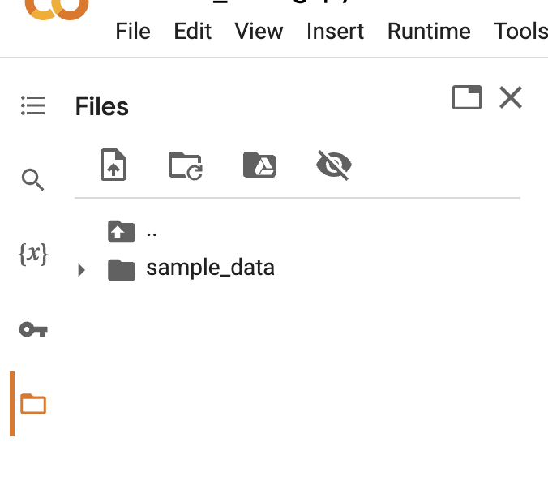

Rampant misinformation — often called “fake news” — is one of the defining features of contemporary democratic life. In this Blog Post, you will develop and assess a fake news classifier using Keras.
Note: Working on this Blog Post in Google Colab is highly recommended.
Data Source
Our data for this assignment comes from the article
- Ahmed H, Traore I, Saad S. (2017) “Detection of Online Fake News Using N-Gram Analysis and Machine Learning Techniques. In: Traore I., Woungang I., Awad A. (eds) Intelligent, Secure, and Dependable Systems in Distributed and Cloud Environments. ISDDC 2017. Lecture Notes in Computer Science, vol 10618. Springer, Cham (pp. 127-138).
I accessed it from Kaggle. I have done a small amount of data cleaning for you already, and performed a train-test split.
Instructions
1. Acquire Training Data
The dataset hosted a training data set at the below URL. You can either read it into Python directly (via pd.read_csv()) or download it to your computer and read it from disk.
train_url = "https://github.com/PhilChodrow/PIC16b/blob/master/datasets/fake_news_train.csv?raw=true"Each row of the data corresponds to an article. The title column gives the title of the article, while the text column gives the full article text. The final column, called fake, is 0 if the article is true and 1 if the article contains fake news, as determined by the authors of the paper above.
2. Make a Dataset
Write a function called make_dataset. This function should do three things:
- Change the text to lowercase.
- Remove stopwords from the article
textandtitle. A stopword is a word that is usually considered to be uninformative, such as “the,” “and,” or “but.” You may find this StackOverFlow thread to be helpful. - Construct and return a
tf.data.Datasetwith two inputs and one output. The input should be of the form(title, text), and the output should consist only of thefakecolumn. You may find it helpful to consult lecture notes or this tutorial for reference on how to construct and useDatasets with multiple inputs.
Call the function make_dataset on your training dataframe to produce a tf.data.Dataset. You may wish to batch your Dataset prior to returning it, which can be done like this: my_data_set.batch(100). Batching causes your model to train on chunks of data rather than individual rows. This can sometimes reduce accuracy, but can also greatly increase the speed of training. Finding a balance is key. I found batches of 100 rows to work well.
Validation Data
After you’ve constructed your primary Dataset, split of 20% of it to use for validation.
Base Rate
Recall that the base rate refers to the accuracy of a model that always makes the same guess (for example, such a model might always say “fake news!”). Determine the base rate for this data set by examining the labels on the training set.
TextVectorization
Here is one option:
#preparing a text vectorization layer for tf model
size_vocabulary = 2000
def standardization(input_data):
lowercase = tf.strings.lower(input_data)
no_punctuation = tf.strings.regex_replace(lowercase,
'[%s]' % re.escape(string.punctuation),'')
return no_punctuation
title_vectorize_layer = TextVectorization(
standardize=standardization,
max_tokens=size_vocabulary, # only consider this many words
output_mode='int',
output_sequence_length=500)
title_vectorize_layer.adapt(train.map(lambda x, y: x["title"]))3. Create Models
Please use Keras models to offer a perspective on the following question:
When detecting fake news, is it most effective to focus on only the title of the article, the full text of the article, or both?
To address this question, create three (3) Keras models.
- In the first model, you should use only the article title as an input.
- In the second model, you should use only the article text as an input.
- In the third model, you should use both the article title and the article text as input.
Train your models on the training data until they appear to be “fully” trained. Assess and compare their performance. Make sure to include a visualization of the training histories.
Visualize your model. You can visualize your models with this code:
from keras import utils
utils.plot_model(model, "output_filename.png",
show_shapes=True,
show_layer_names=True)Notes
- For the first two models, you don’t have to create new
Datasets. Instead, just specify theinputsto thekeras.Modelappropriately, and Keras will automatically ignore the unused inputs in theDataset. - The lecture notes and tutorials linked above are likely to be helpful as you are creating your models as well.
- You will need to use the Functional API, rather than the Sequential API, for this modeling task.
- When using the Functional API, it is possible to use the same layer in multiple parts of your model; see this tutorial for examples. I recommended that you share a text vectorization layer and an embedding layer for both the article
titleandtextinputs.- Note: Do not use the shared embedding layer with separate text vectorization layers. If you do so, you will be embedding two different words on the same coordinate.
- You may encounter overfitting, in which case Dropout layers can help.
You’re free to be creative when designing your models. If you’re feeling very stuck, start with some of the pipelines for processing text that we’ve seen in lecture, and iterate from there. Please include in your discussion some of the things that you tried and how you determined the models you used.
What Accuracy Should You Aim For?
Your three different models might have noticeably different performance. Your best model should be able to consistently score at least 97% validation accuracy.
After comparing the performance of each model on validation data, make a recommendation regarding the question at the beginning of this section. Should algorithms use the title, the text, or both when seeking to detect fake news?
4. Model Evaluation
Now we’ll test your model performance on unseen test data. For this part, you can focus on your best model, and ignore the other two.
Once you’re satisfied with your best model’s performance on validation data, download the test data here:
test_url = "https://github.com/PhilChodrow/PIC16b/blob/master/datasets/fake_news_test.csv?raw=true"You’ll need to convert this data using the make_dataset function you defined in Part §2. Then, evaluate your model on the data. If we used your model as a fake news detector, how often would we be right?
5. Embedding Visualization
Visualize and comment on the embedding that your model learned (you did use an embedding, right?). Are you able to find any interesting patterns or associations in the words that the model found useful when distinguishing real news from fake news? You are welcome to use either 2-dimensional or 3-dimensional embedding. Comment on at least 5 words whose location in the embedding you find interpretable.
I’d suggest that you create an embedding in a relatively large number of dimensions (say, 10) and then use PCA to reduce the dimension down to a visualizable number. This procedure was demonstrated in lecture.
Tip: Taking images out of Colab
You can download the files on Colab from the “Files” tab on the left pane. The default working directory you will see is /content, and you will be able to download the iframe_figures/ directory (if you use the iframe renderer for plotly – that directory must be in the same location as the .ipynb file for the plotly figures to show up on your blog!) and any PNG files you generated. If you don’t see them, hit the “refersh” button (the second icon under the File pane).

Specifications
Please remember that you must meet all specifications in order to receive credit on the first submission!
Format
- There is no autograder for this homework. Please submit the PDF printout of your blog post to the “pdf” window and any code you wrote to the “files” window – including
index.ipynbandindex.py.
Coding Problem
- Keras 3 is used.
Data Prep
- Stopwords are removed during the construction of the data set.
make_datasetis implemented as a function, and used to create both the training/validation and testing data sets.- The constructed
Datasethas multiple inputs. - 20% of the training data is split off for validation.
- There is a comment on the base rate for the data set.
Models
- Model 1 uses only the article title.
- Model 2 uses only the article text.
- Model 3 uses both the article title and text.
- For model 3, embedding is consistent with the text vectorization method. i.e., if you use shared embedding layer, the preceding text vectorization layer also should be shared.
- The training history is plotted for each of the three models, including the training and validation performance.
- The models are visualized, with output shapes and layer names visible for each layer.
- The most performant model is evaluated on the test data set.
- The best model consistently obtains at least 97% accuracy on the validation set.
- The best model’s performance on the test set is shown.
Embedding Visualization
- A visualization of the learned word embedding is shown.
- The written text discusses at least 5 words whose location is interpretable within the embedding.
Style and Documentation
- Code throughout is written using minimal repetition and clean style.
- Docstrings are not required in this Blog Post, but please make sure to include useful comments and detailed explanations for each of your code blocks.
- Any repeated operations should be enclosed in functions, regardless of whether they are explicitly required in the instructions.
Writing
- The blog post is written in tutorial format, in engaging and clear English. Grammar and spelling errors are acceptable within reason.